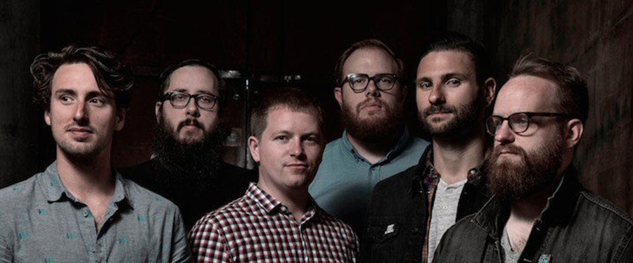
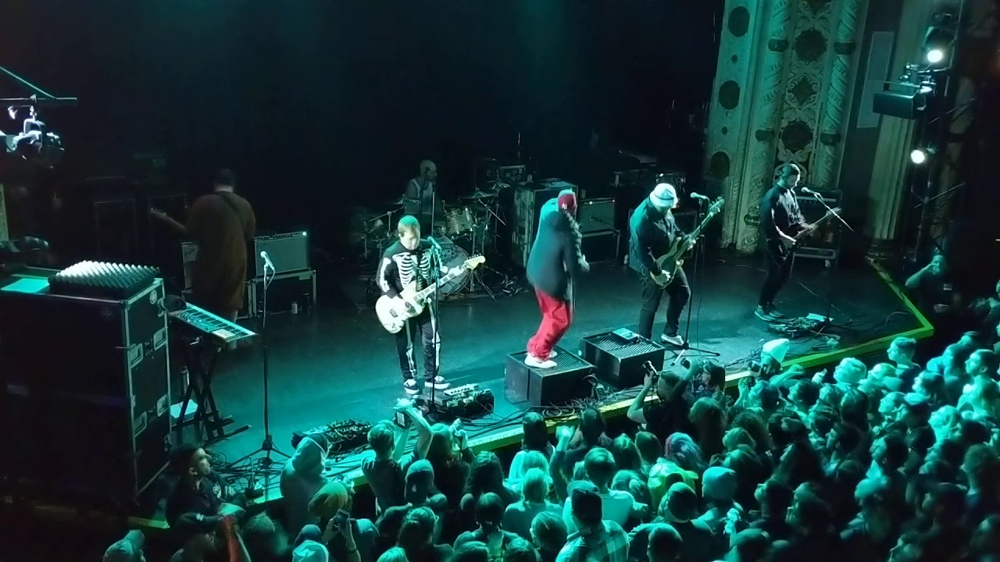
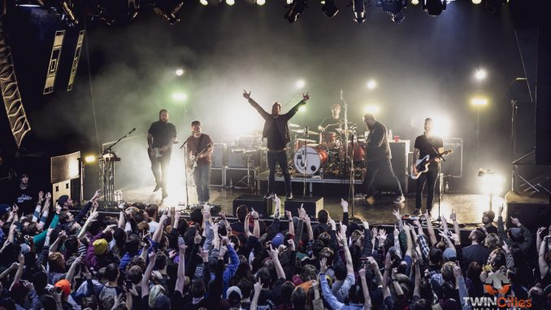
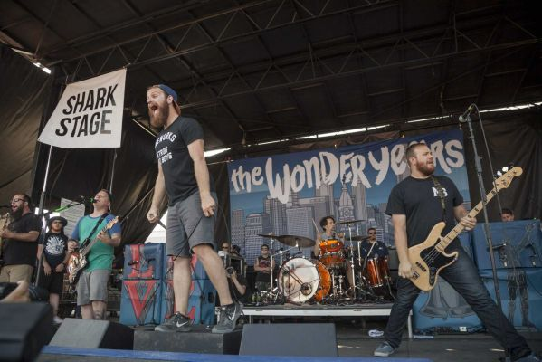
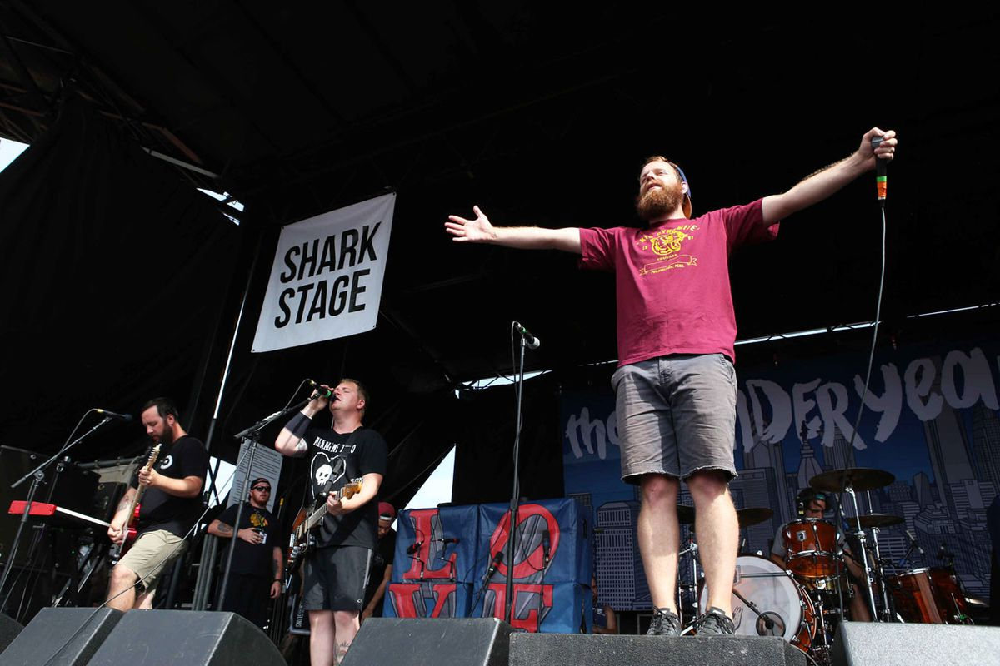
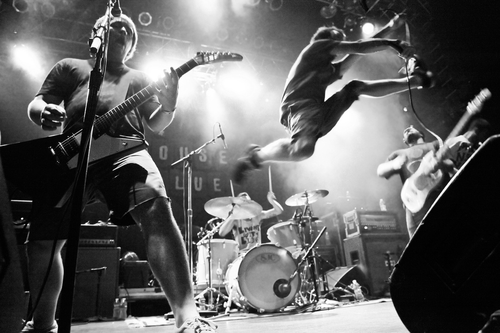
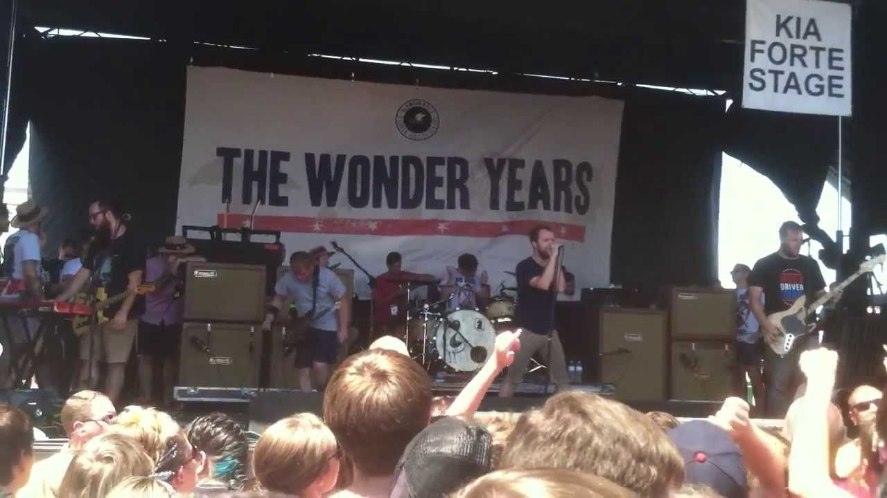
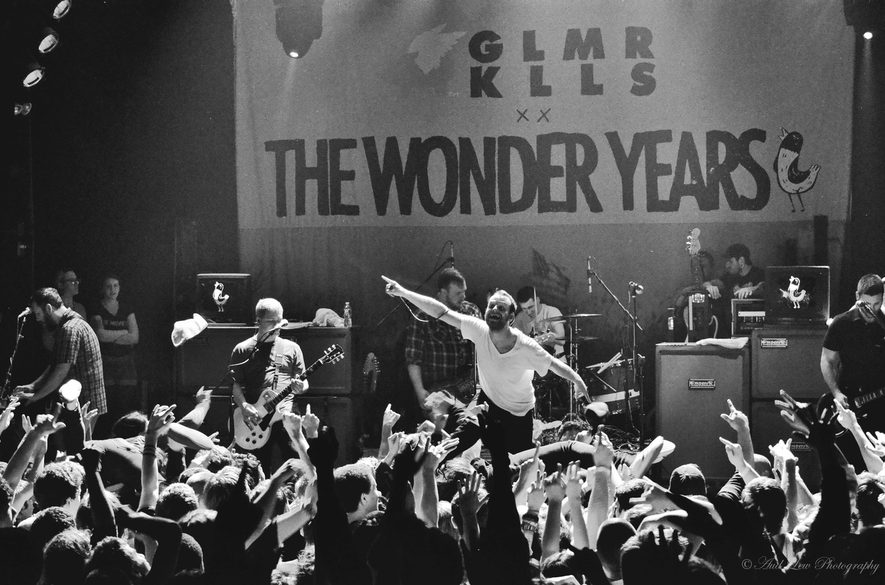
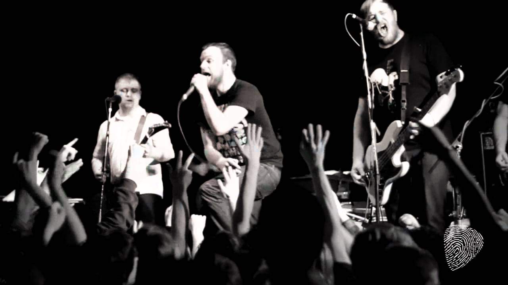
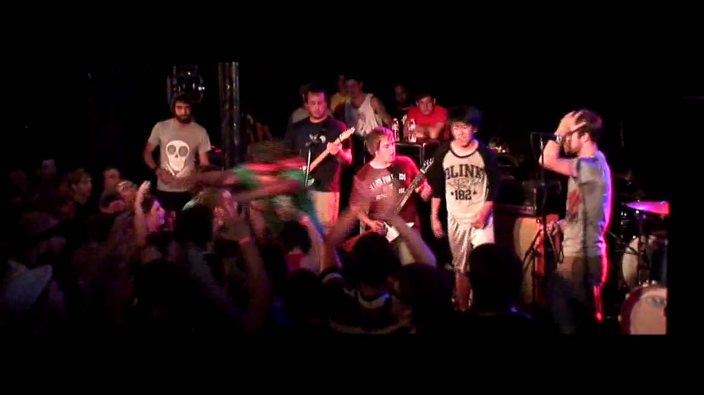

PAST TOURS

2018

Headlining Tour
with Sorority Noise, Aaron West (4/11-19, UK)
Headlining Tour
with Tigers Jaw, Tiny Moving Parts, Worriers (5/4-6/10, US)
2017

Headlining Acoustic Tour
with Laura Stevenson, The Obsessives, and Jetty Bones (9/24-10/8, US)
2016

The Mindsweep Tour 2016
with Enter Shikari and The King Blues (2/18-2/27, UK)
Headlining Tour
with Letlive, Tiny Moving Parts and Microwave (3/5-4/5, US)
Headlining Tour
with Roam, With Confidence and Cautioners (4/27-4/29, Japan)
Headlining Tour
with Knuckle Puck and Our Past Days (5/5-5/14, Australia)
Headlining Tour
with Clarity, Laura Stevenson (7/28-7/31, UK)
Headlining Tour
with Real Friends, Knuckle Puck, Moose Blood and Seaway (10/15 - 11/23, US and Canada)
2015

Soundwave Australia Tour 2015
(2/21-2/22, 2/28-3/1, 2/24-2/27, Australia)
(3/23-3/25, England)
(6/19-8/8, US and Canada)
Headlining Tour
with Motion City Soundtrack, State Champs, You Blew It! (10/17-11/27, US and Canada)
2014

Headlining Tour
with Fireworks, Real Friends, Citizen, Modern Baseball (3/5-4/17, US)
Headlining Tour
with A Loss for Words, State Champs (4/30-5/17, Europe)
Headlining Tour
with The Story So Far, Modern Baseball, Gnarwolves (10/1-10/31, US)
2013

(2/23-3/4, Australia)
Headlining Tour
with Fireworks, Hostage Calm, Misser (3/8–3/29, US)
(6/15–8/4, US and Canada)
Japan Tour 2013
with Me vs Hero (8/23-8/31, Japan)
House Party Tour
with A Day To Remember, Pierce the Veil, All Time Low (9/11–10/24, US)
Acoustic Holiday Tour
with Vinnie Caruana, Young Statues (12/12-12/15)
2012

Glamour Kills Tour
(3/9–4/20, US)
2011

2011 Kerrang! Tour
(2/2–2/18, UK)
Man Scout Jamboree Tour
with Fireworks, Such Gold, Make Do and Mend, Living with Lions (4/8–5/7, US)
(6/24–8/14, US and Canada)
A Whole Year in Airports Tour
with Valencia, Such Gold (9/12–9/23, UK)
Pop Punk's Not Dead Tour
with New Found Glory, Set Your Goals, Man Overboard, This Time Next Year (10/6–11/20, US)
2010

Kimbo Wants a Pepsi Tour
with Set Your Goals, Comeback Kid, This Time Next Year (4/16–4/26, US)
Enemy of Europe Tour
with Four Year Strong, Fireworks (6/1–6/9, UK)
Ship of Fools Tour
with Streetlight Manifesto, The Supervillains, Crime in Stereo, Dan Potthast (6/23–7/30, US)
Tonight We Feel Alive Tour
with Four Year Strong, Comeback Kid, American Fangs, Mountain Man (10/3–11/6, US)
2009

The Ghostbustour
with A Loss for Words, Energy (9/21–11/9, US)